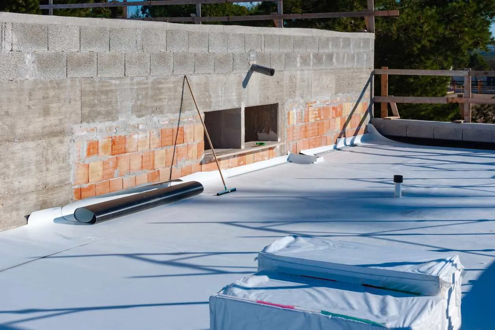

If you look across the Salt Lake Valley, you’ll notice many structures, particularly larger commercial buildings, have flat roofs. We’re discussing which kind of roof is best, how long a flat roof should last, and the pros and cons of flat roofing. Understanding how flat roofs work and the materials used to construct them can help you care for and maintain the roof on your structure.
Flat Roofing Materials
Whether you have a flat roof or are considering adding one, you might wonder which kind of roof is best. Ultimately, the best roof for your building depends on a variety of factors, including:
Budget
Climate conditions
Expected longevity
Here are the three major categories of flat roofs and some benefits.
Single-Layer Membrane Roof
A membrane roof is one of the newer flat roofing options and the most common material for commercial buildings. It uses an elastomeric or plastomeric membrane, which can be made from:
Neoprene (polychloroprene): Neoprene sheets provide high levels of protection but are susceptible to UV rays from the sun. To help prevent sun damage, neoprene often has a coating of chlorosulfonated polyethylene, adding a protective layer to the material.
Ethylene propylene diene monomer (EPDM): The most common of all of these options, EPDM is extremely durable. EPDM is the least expensive to install and repair compared to other flat roofing materials. Because EPDM membrane creates a stretchy, rubbery membrane, it may also be called a rubber roof.
Polyvinyl chloride (PVC): PVC is most commonly seen in commercial roofing, but is becoming more common in residential construction due to its durability. This material also has resistance to fire, chemicals, and strong winds, which can threaten and damage other types of flat roofing. Additionally, PVC membranes include solar reflectivity to regulate building temperature and energy use.
Chlorinated polyethylene (CPE) and chlorosulfonated polyethylene (CSPE or CSM): CPE, CSPE, and CSM membranes work best in bright, warm environments. They’re highly resistant to deterioration from sunlight and usually come in white and other heat-reflective colors. While they protect against sunlight and heat, CPE and CSPE take longer to repair than other membrane options, leading to a decline in usage and popularity among roofers.
Modified Bitumen Roof
Modified bitumen roofs include multiple layers of material, making them thicker than a single membrane roofing option. Most systems have at least two layers or plies. This option bridges the gap between single-layer membrane roofs and built-up roofs.
Modified bitumen roofs work well as repurposed roofs and can withstand heavy foot traffic and daily use. Because modified bitumen roofs use multiple layers, they can leverage the strengths of each material to create a stronger, more protective roof that is highly durable. This high durability isn’t just against the elements and weather; it’s also against foot traffic.
Built-up Roof (BUR)
At the most basic level, built-up roofs (BUR) include layers of ply sheets, hot tar, and gravel. With multiple layers, this combination becomes weather resistant in all conditions. Its redundant layers ensure that the lower layers can provide protection even if the top layers sustain damage.
One of the biggest issues with low-slope/flat roofing is water pooling. If the roof doesn’t drain properly, small puddles can create massive issues down the line. Moisture accumulation can lead to cracking or leaking in the layers of the BUR, along with other issues like warping, waving, and blistering.
What is the Best Type of Flat Roof?
Rubber, specifically EPDM (ethylene propylene diene terpolymer), is considered ideal for most flat roofs due to its durability and resistance to weathering, UV radiation, and ozone exposure, giving it a longer lifespan. Its flexibility prevents cracking from temperature changes, and its lightweight nature reduces structural stress. Additionally, EPDM is environmentally friendly and recyclable, making it a cost-effective and sustainable roofing choice.
What Is the Lifespan of a Flat Roof?
When considering this type of roofing material, you may ask, how long should a flat roof last? The lifespan of a flat roof depends on its material and exposure. For example, a flat roof that has to withstand the summer heat of southern Utah faces different issues than a flat roof in Park City that handles exposure to cold and snowy winters.
On average, a properly maintained flat roof lasts 15 to 25 years before replacement. The exact lifespan may differ depending on the climate conditions and materials used to construct it.
Why Get a Flat Roof?
Flat roofs are growing in popularity due in part to the affordable pricing and ease of installation. Other advantages of a flat roof include:
Versatility
Increased space within a structure (to house HVAC equipment and other items)
Improved energy efficiency
Unique appearance
Ease of maintenance and repairs
Because a flat roof eliminates the attic that’s present in a structure with a sloped roof, the entire roof has continuous insulation. With no gaps in insulation coverage, there are fewer places for air to escape, resulting in a more comfortable indoor atmosphere.

What Makes a Flat Roof Different?
Flat roofs require special care and attention. If you treat a flat roof as you would a sloped roof, it may have a shorter lifespan and require additional repair.
Besides the roof’s angle, another key difference is the maintenance required with a flat roof. An angled roof can drain water automatically, while a flat roof often needs extra help to prevent moisture collection that can cause damage. If you ever see a blockage in the moisture drainage from a flat roof or any signs of water collection, it’s important to take immediate action to prevent moisture seepage.
Weight can also become an issue with flat roofs, especially if you have repurposed the roof as a patio or urban garden. Excess weight can cause the roof to collapse, so be aware of how much weight your roof can hold and stay below that level.
Even if you don’t stand on your roof, the winter months can bring heavy loads of ice and snow. While snow may seem light and fluffy when it falls, it can put a lot of pressure on the roof as it gathers and melts. The estimated weight of accumulated and melting snow ranges between one and 30 pounds per cubic foot.
What Are the Pros and Cons of Having a Flat Roof?
Here are some of the pros and cons of having a flat roof.
Pros
Easy Installation: Flat roofs use fewer materials than sloped roofs and don’t require as much specialized installation equipment.
Additional Space: A flat roof can become a functional outdoor space, used as a rooftop patio, urban garden, or modern-day oasis.
Easy Repair and Maintenance: Compared to a sloped roof, repairing a flat roof is faster, more affordable, and easier to complete.
Cons
Shorter Lifespan: A sloped roof has an average lifespan of about 20 years before requiring replacement. Flat roofs last for about 10 years before they need to be replaced.
Potential Ice Dams: Having a flat roof in a cold part of Utah could result in frozen pools of water and ice dams. Their presence can lead to dangerous levels of snow and ice, damaging the roof and potentially destroying the building. If you plan on using a flat roof in Utah, you should always consult an expert like American Roofing to ensure it can withstand exposure to harsh elements.
American Roofing Can Install Your Flat Roof
American Roofing works with all roofing materials and can install flat roofs. We also offer repair and maintenance services on flat roofs for commercial buildings, apartments, and more. our technicians can make sure these roofs can handle the warm summers and cold winters of Utah.
If you’re interested in a flat roof for your structure, contact us to get your free quote today.
About the Author: Andrew Yorgason
Free estimates
Get a straight answer about your roof.
Free roof evaluation. We'll explain what we find, and if it can be repaired, we won't sell you a replacement.